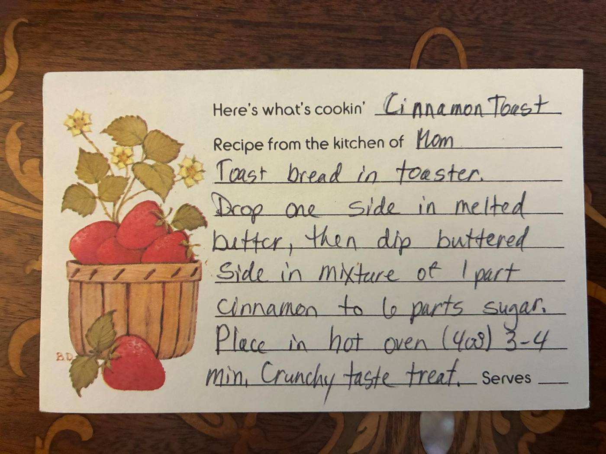

Breads & Sides
Cinnamon Toast
From the kitchen of Mom
Oven400°F
Bake3–4 min

Mom's original card · tap to enlarge
Ingredients
Method tap a step to mark it done
- Toast the bread in the toaster.
- Dip one side in the melted butter, then dip the buttered side in the cinnamon sugar.
- Place in a hot oven (400°F) for 3–4 minutes.
Mom’s tips
- Crunchy taste treat.